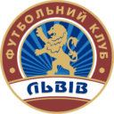
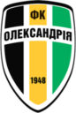

Ми любимо наше місто!
Історія
- 2006: засновано ФК "Львів"
- 2006-2008: виступи у Першій Лізі України
- 2008: вихід до Прем'єр Ліги України, невділа виступи та виліт до Першої Ліги
- 2012: клуб припиняє існування через фінансові труднощі
- 2013-2016: існування виключно ДЮСШ ФК "Львів"
- 2016: клуб заявляється в чемпіонат України серед аматорів
- 2017: повернення професіонального статусу ФК "Львів"
- 2018: продовження виступів у Прем'єр Лізі України
Остання гра
02.09.2018, м.Львів, стадіон "Арена-Львів"
2:2
 